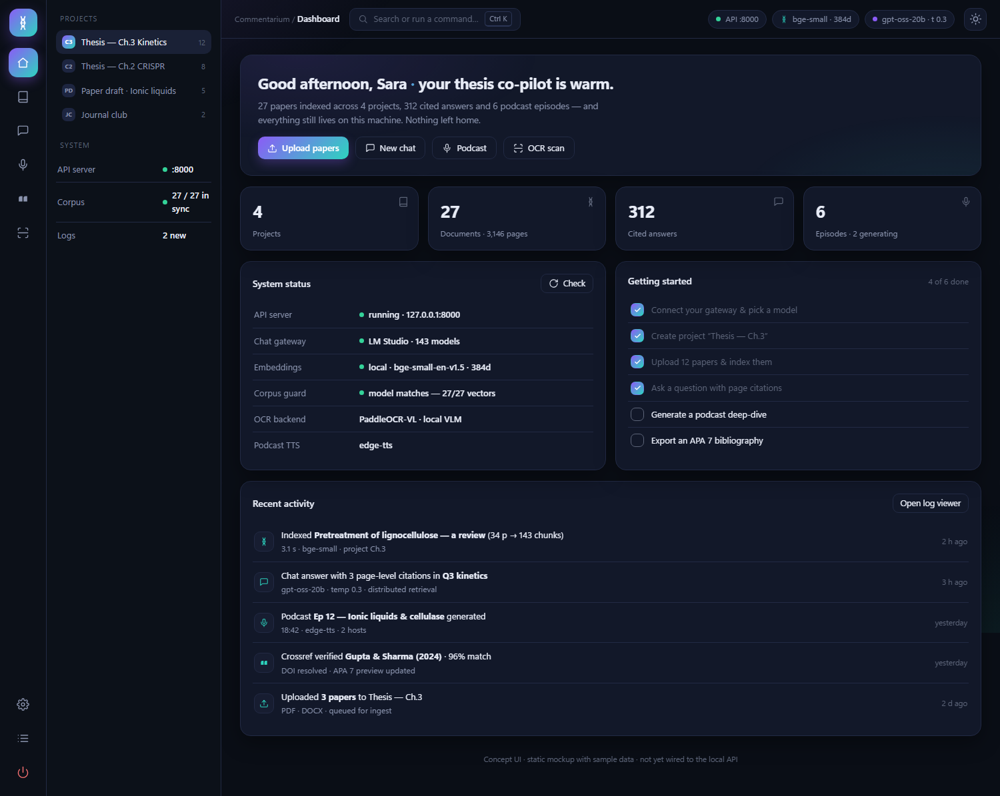

A local, privacy-first research assistant for your literature — chat over your papers with page-level citations, generate NotebookLM-style podcasts, OCR scans into Markdown, and export APA 7 / Vancouver bibliographies.
This site is a static design preview of the app's interface with sample data — nothing here calls a backend or stores anything. The real application runs on your machine: download it from the Releases page and start run.bat.
